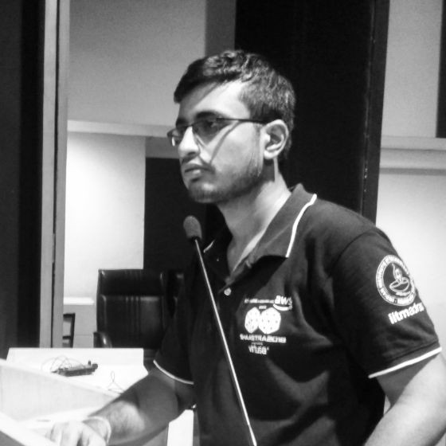

Research Fellow at IIT Bombay working on chromatin organisation, polymer physics, and computational biophysics.
Three-dimensional organisation of chromatin across cell-cycle stages and disease conditions.
Dynamics of transcription factors and DNA repair proteins in complex nuclear environments.
Coarse-grained polymer models, Monte Carlo and Langevin simulations.